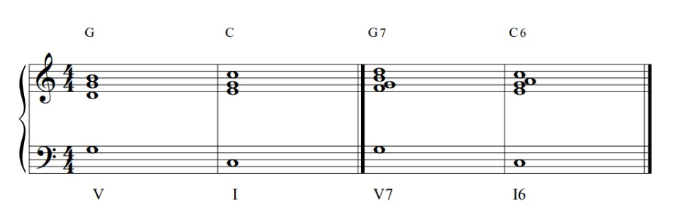
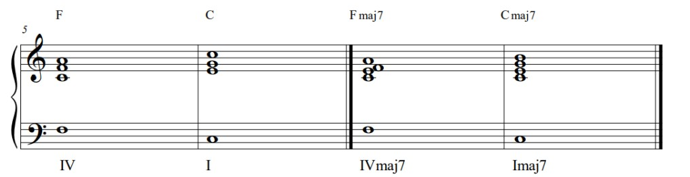
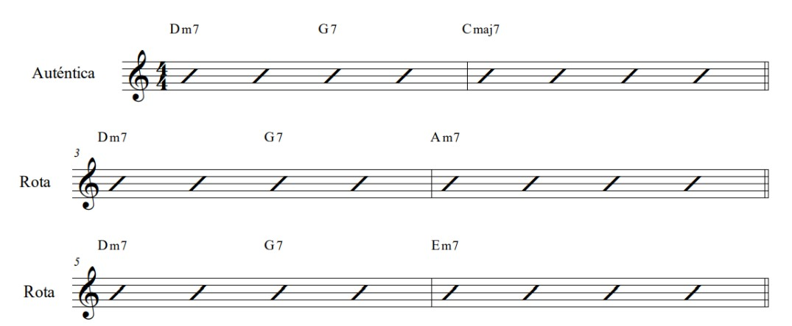
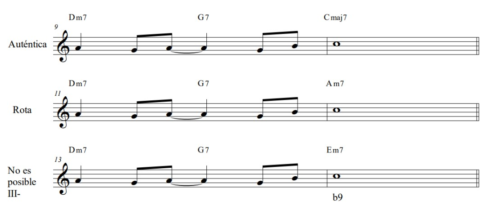
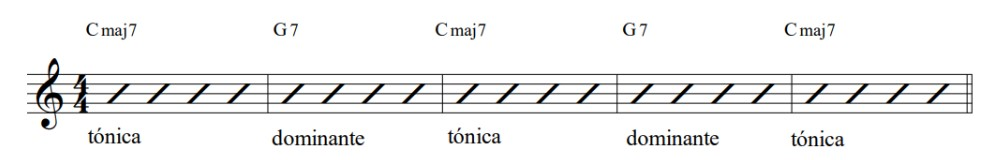
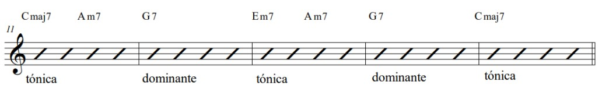
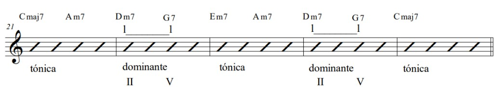

Cadencias y Cadenas
Los enlaces entre los acordes de una progresión armónica pueden catalogarse en cadencias
Cadencia
Es una sucesión armónica que nos lleva a un cierto punto de reposo. Viene a ser como la puntuación en la lengua escrita; los tipos de cadencia determinan el tipo de reposo en la frase musical como los puntos y comas lo hacen en el lenguaje escrito.
Clasificación de las cadencias
Hay cuatro tipos de cadencias
- Auténtica.
- Plagal.
- Rota.
- Semicadencia.
Cadencias conclusivas
La cadencia auténtica viene determinada por un reposo sobre el acorde de tónica (1) al que se llega desde el acorde de dominante (V7).
La cadencia plagal viene determinada por un reposo sobre el acorde de tonica(I) al que se llega desde el acorde de subdominante(IV)
La cadencia plagal tiene diversas variantes constituidas por todos los enlaces posibles entre acordes de subdominante que van a acordes de tónica
Tanto la cadencia autentica como la plagal en el enlace IV-I son consideradas conclusivas, sobre todo cuando la melodia termina en la tonica
La cadencia auténtica viene muy a menudo precedida por un acorde de subdominante, en la música traducional el encadenamiento es IV-V-I

En Jazz y en muchos estilos de musica moderna este enlace viene dado por II-7, V7 y C6 ya que el movimiento entre fundamentales es mas fuerte

Cadencias suspensivas
La semicadencia es un momentaneo reposo sobre un acorde que no es de tonica, la formula basica es sobre el acorde de dominante
En música popular es muy usual el acabar la primera frase en una semicadencia para repetir a continuacion la misma o similar frase melódica con una cadencia auténtica

Cadencia Rota
Esta cadencia se produce cuando el acorde de V7 no va al I, es una cadencua auténtica truncada en el último acorde. Las más frecuentes son en las que el acorde V7 va a parar a un acorde de tonica diferente del I
El efecto de esta cadencia es que la progresión continua, el efecto de cadencia rota o inesperada, se acrecienta cuando la melodía acaba en la nota tonica. Esto no es siempre posible ya que la tónica debe ser una nota o tensión disponible del acorde que ocupa el lugar del I en dicha cadencia.
Cadenas
Las cadencias son las puntiaciones de una frase armónica, Las cadenas son la frase en sí
Toda sucención de acordes(cadena) va siendo delimitada por una serie de cadencias, el enlace entre los acordes de una cadena sigue una pauta de relación entre el acorde anterior y el posterior hasta encontrar una cadencia determinada.
Los acordes diatónicos crean en general cadencias
Modificación de la progresión, con acordes diatónicos de función tonal similar.
La relación II-V
Esta relación es de uso muy frecuente y se oye como un patrón perfectamente identificable, la duración del acorde V7 es a menudo dividida por esta relación, tomando el II-7 la primera mitad de la duración del V7 y éste la segunda mitad. Esta relacion se indica con un corchete de análisis que une los dos cifrados.
En el ejemplo anterior la sucesion de acordes diatónicos no ha creado una cadena sino dos cadencias, una rota al pasar del segundo al tercer compás y una auténtica del cuarto al quinto
Las cadenas se forman por la sucesión de acordes no diatonicos que tienden a uno diatónico que hará una cadencia.